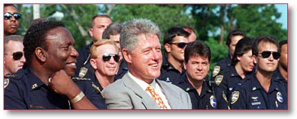

|
Put 100,000 more police officers on
the street. More than 43,000 officers have already
been funded. |
|
|
Imposed a targeted
“Three-Strikes-and-You’re-Out” provision to put
career violent offenders behind bars for life. |
|
|
Expanded the death penalty to
include drug kingpins, murderers of federal law
enforcement officers and nearly 60 additional
categories of violent felons. |
|
|
Provided funding for 100,000 more
prison cells to help states ensure that violent
offenders serve their full sentences. |
|
|
The number of murders fell 8% in
1995—one of the largest decreases in more than 30
years. The nation’s largest cities saw their overall
crime fall 6% during the same period. |
|
|
Stood up to the gun lobby and won
passage of the Brady Bill. As a result, more than
60,000 fugitives, felons and other criminals have
already been blocked from buying handguns. |
|
|
Banned the manufacture and
importation of 19 of the deadliest assault weapons
while specifically protecting more than 650
legitimate sporting weapons. (Assault Weapons
Ban) |
|
|
Developed a comprehensive National
Drug Control Strategy that will reduce illegal drug
use through law enforcement, prevention, treatment
and interdiction. |
|
|
Breaking the cycle of drugs and
crime through universal drug testing in the criminal
justice system and by providing funding for drug
courts. |
|
|
Cocaine use in the U.S. has
decreased more than 30% since 1992. |
|
|
Provided $156 million in state
grants to bolster local law enforcement, prosecution
and victims’ services to better address violence
against women. (Violence Against Women Act) |
|
|
Established nationwide 24-hour
domestic violence hotline providing immediate crisis
intervention, counseling and referrals for those in
need. |
|
|
Keeping dangerous weapons out of our
children’s classrooms by enforcing a “Zero
Tolerance” gun policy in schools. |
|
|
Reducing violence and drug abuse in
our schools by investing in school security, drug
prevention programs and counseling. (Safe and
Drug-Free Schools Act) |
|
|
Encouraged schools to consider
adopting school uniform policies to help reduce
violence while promoting discipline and respect. |
|
|
Stood firm against illegal
immigration and deported a record 51,600 illegal and
criminal aliens in 1995—a 15% increase over
1994. |
|
|
Increasing the number of Border
Patrol agents along the southwestern border by 50% to
stem the flow of illegal aliens into the United
States. |
|